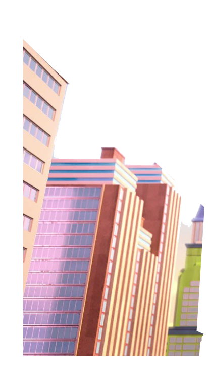
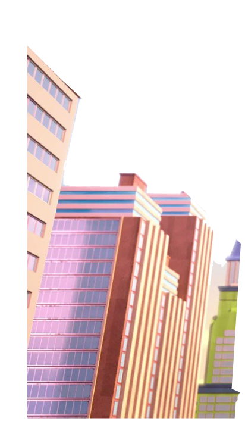
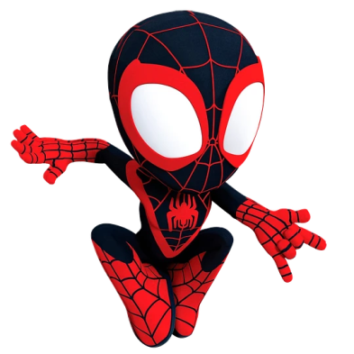
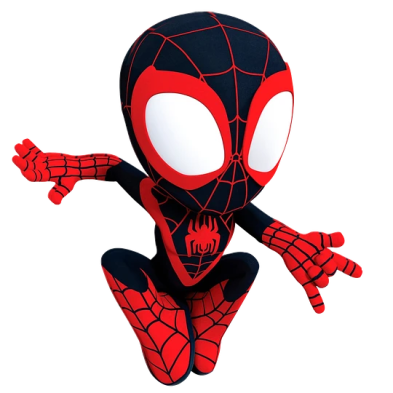
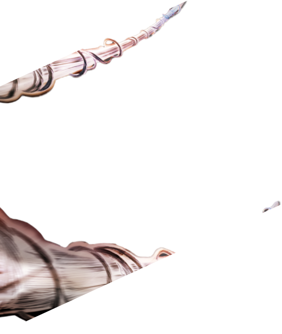
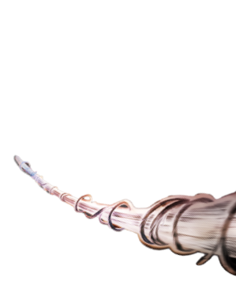
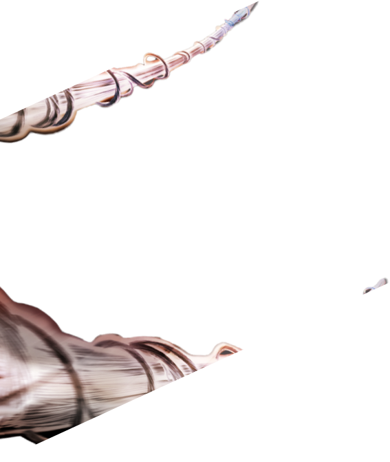
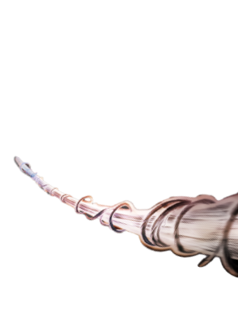

 

 



Conoce a Spidey y sus
sorprendentes amigos
Spidey, nuestro lanzador de telarañas favorito se une a Ghost-
Spider (Gwen Stacey)
y Miles Morales para formar el equipo de
Spidey, con la ayuda del cómico pero leal robot de Spidey,
TRACE-
E. Si Spidey se encuentra en una situación difícil donde necesita
aún más poder de superhéroe,
tengan la seguridad de que un
amigo de los Vengadores correrá para ayudar.